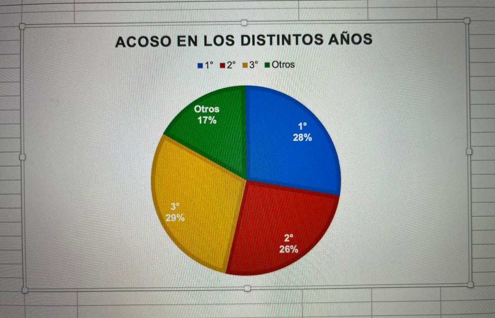
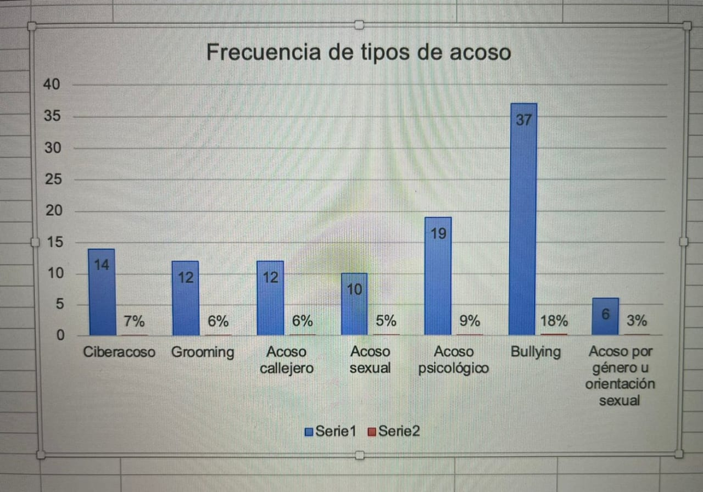

Analisis, recopilacion e interpretacion de los datos obtenidos en la encuesta.
Cantidad de personas que participaron:
En la encuesta participaron 202 alumnos:
- 1ro: 87 alumnos.
- 2do: 36 alumnos.
- 3ro: 59 alumnos.
- Otros (4to, 5to o 6to): 20 alumnos.
Cantidad que conoce sobre el acoso y cantidad que sabe a quien pedir ayuda:
De todos ellos, solo 176 tenian conocimiento de algun tipo de acoso, lo que representa el 87,13% del total. Y en caso de sufrir acoso en la actualidad, solo 180 alumnos saben a quien pedir ayuda; esta cifra representa el 89%.

Alumnos que sufrieron acoso y porque es importante hablar con la victima:
54 alumnos sufrieron algun tipo de acoso, esto representa un 27% de la tabla; y si tenemos en cuenta que el promedio de edades de quienes sufrieron acoso es de 14,57%, podemos interpretar que este se sufrio entre algun grado de primaria y los primeros anos de secundaria.
Es importante tener esto en cuenta ya que el sufrir acoso de cualquier tipo puede dejar secuelas visibles o no visibles en las acciones o comportamiento de la persona; por esto tambien es importante localizar y hablar con ella o el, para al menos dejarles saber que no cargan con eso solos.
Acoso que mas se sufre:
Al analizar todos los tipos de acosos mencionados en la encuesta (Ciberacoso, Grooming, Acoso callejero, Acoso sexual, Acoso psicologico, Bullying y Acoso por genero u orientacion sexual); podemos notar como el bullying es el mas frecuente con un 18% del total, y siendo 37 alumnos quienes pasaron por el.
